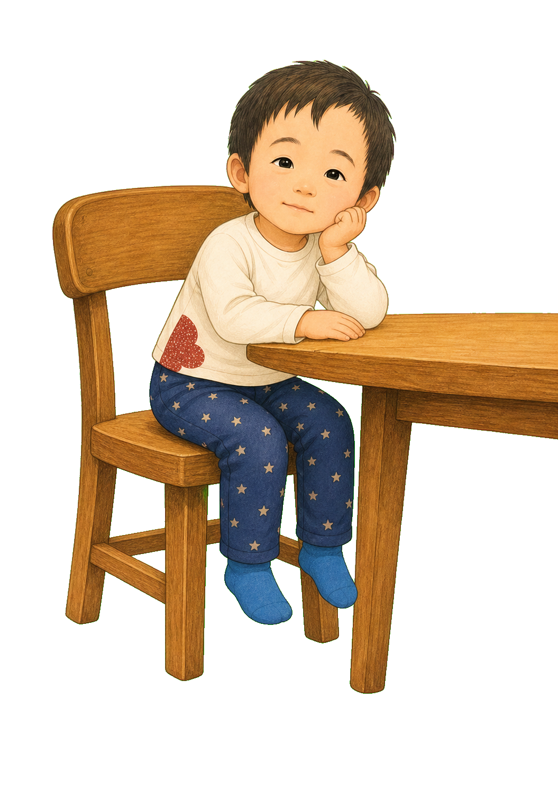
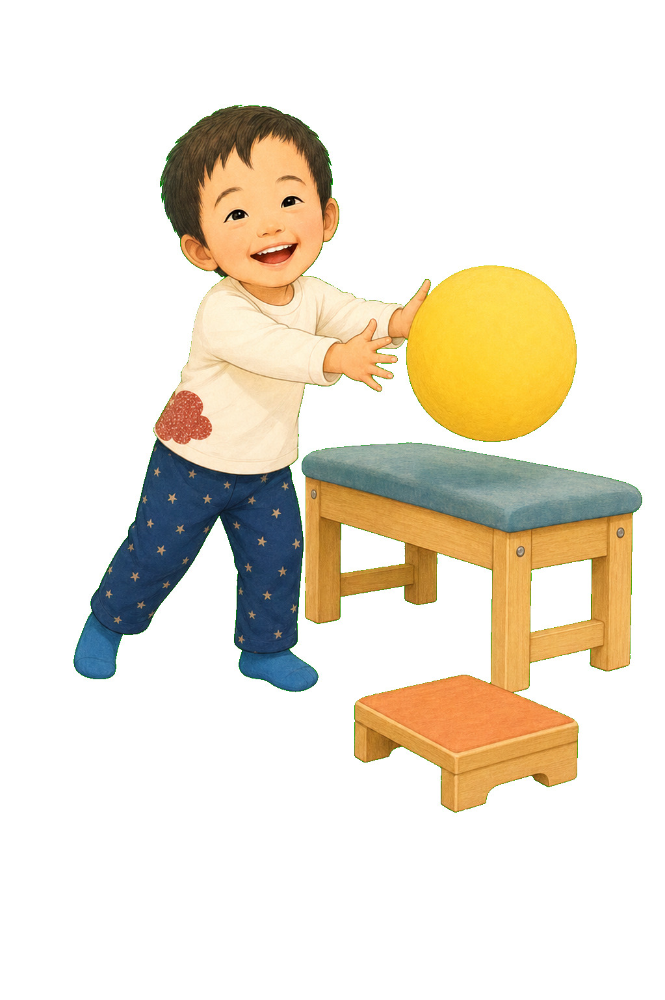
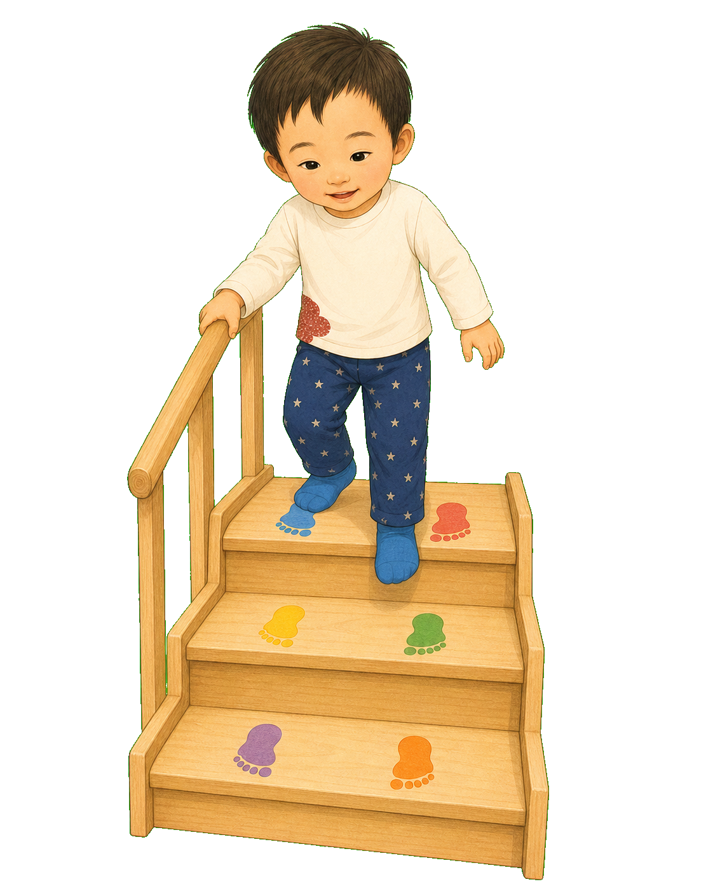

1
すわる。
ボールを とる。
かいだんを のぼる。
みんなには、ひとつの うごき。
でも ぼくには——
いくつもの うごきを
いっしょに すること。
2
すわる
あしが ぶらぶら。
からだが ぐらり。
おえかきしたいのに、ぼくの てまで ぐらぐらする。
すわるには、あしで ささえる・おなかを おこす・あたまを まっすぐ・めと てを うごかすが いる。

3
うさぎせんせいが、
あしだいを ことん。
あしが ぺたん。おしりが あんてい。
てが すーっと うごいた。
「がんばる」を ふやすより、
ぐらぐらを へらそう。
ぺたん
4
ボールを とる
見えているのに、
てが まにあわない。
とるには、めで みつける・うごきを おいかける・りょうてを のばす・からだを たおさないが いる。
めと てと からだを、
おなじ ときに うごかす しごと。

5
ベンチで からだを
あんていさせて、
おおきな ボールを、ゆっくり。
みる。まつ。てを のばす。
つかまえた！
ぼくに あう はやさなら、
めと ても であえる。
6
かいだんを のぼる
みんなは どんどん。
ぼくは ぴたり。
のぼるには、つぎの だんを みる・かたあしで ささえる・もう かたほうを あげる・たいじゅうを うつすが いる。
一だんの なかに、
たくさんの しごと。

7
ぼくの からだは、
その しごとを まとめるのに
すこし 時間が かかる。
力を たもちにくい。かんせつが やわらかい。
たつと かかとが かたむきやすい。
バランスを さがす 時間も いる。
どれも「だめ」じゃない。
ぼくの からだの とくちょう。
8
うさぎせんせいは、
「もっと がんばって」より
さきに みた。
おなか。せなか。ひざ。あし。
めせん。はやさ。つかれかた。
「むずかしい わけは、
ひとつじゃないね」
9
うさぎせんせいの
どうぐばこ。
あしだい。ベンチ。かがみ。
あしあと。てすり。ゆっくりの ボール。
つかれたときの おやすみカード。
ぼくを なおす どうぐじゃない。
ぼくの 力を つかう どうぐ。
10
てすりを ぎゅっ。
あしあとを みる。
ひくい だん。
ぼくが うごくまで まつ 時間。
うさぎせんせいは、
できる じゅんびを してくれる。
11
つぎの だんを みる。
かたあしで ささえる。
もう かたほうを あげる。
いち、に。
さいごの 一歩は、ぼくが だす。
ぼくは「できない」んじゃない。
ひとつずつ わかること。ぼくに あう どうぐ。ぼくに あう はやさ。
できる かたちなら、
ぼくの 一歩は すすんでいく。
おはなしの あとに
一つの動きの中には、いくつもの身体の仕事があります。
この物語の主人公は、ダウン症のある子どもです。低緊張に加え、筋力、関節の柔らかさ、足の位置、姿勢、バランス、目と手の協調、疲れやすさなどは一人ひとり異なります。行動を急がせる前に、動きに必要な力を分けて観察すると、支援の手がかりが見つかります。足台、椅子、手すり、段差、靴や装具などは、PT等による個別の評価と安全確認のうえで選んでください。
うさぎせんせいに相談する